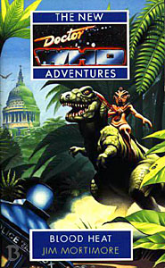

|
Blood Heat
|
BASIC PLOT DOCTOR Possibly the most grotesque appearance of the Third Doctor ever: "A skeleton taller than the rest, with two extra ribs, draped in the remains of a frilly white shirt and dark cloak, long trousers and spats." (Pg 244) The Third Doctor also makes a flashback appearance on Pgs 244-245: "Weak from starvation and moisture deprivation, the Doctor mumbled through cracked lips, 'It's still not too late, you know. The madness can still end. Let me speak to Okdel. Morka, please! In the name of humanity!'" COMPANIONS Alternative versions of the Brigadier, Sergeant Benton, Liz Shaw (a widow) and Jo Grant (reduced to a savage, dies on Pg 150, killed by the Brigadier) all appear. No Mike Yates, presumably because he wasn't introduced to UNIT until Terror of the Autons (which doesn't necessarily presuppose that he wasn't around). MATERIALISATION CIRCUIT Pg 290 The replacement TARDIS, the Third Doctor's old one, materializes around the whole of Planet Earth. That's impressive. Pg 303 in the middle of the Silurian Palace fountain. PREPARATORY READING CONTINUITY REFERENCES Furthermore, much of the alternate universe characterization has reflections of another Season 7 tale, Inferno. Involution "It remembered feeding. Now it only knew hunger. That and the pain, invading it like a parasite, controlling, consuming, relentless and inviolable. -kill- the pain told it" This, and the rest of the opening section refer to the Chronovore (The Time Monster) that has been captured by the Meddling Monk (The Time Meddler, The Dalek Masterplan) which forms the backbone of this Alternate Universe cycle (this book and the subsequent four). The UK magazine TV Zone was kind enough to reveal this information before the publication of No Future. I'm not bitter. Pg 3 "Ace shrugged. 'That's Spacefleet service for you.' Ace served with Spacefleet in a five year period between leaving the TARDIS in Love and War and returning in Deceit. Pgs 3-4 "She plucked the last of her redesigned marble-sized nitro nine smartbombs from her pocket." Ace used Nitro Nine frequently in the series, beginning in Dragonfire, and in some of the books since. She's generally moved onto more vicious weapons by this point. Pg 4 "You've been out of Spacefleet for months now, and you weren't even happy when you were in it. Why do you wear the armour?" It's clearly been some time since Deceit (5 books, although two of those - Birthright and Iceberg - happened simultaneously). Ace's wearing or not of her body armour is relevant throughout this arc. Ace's time in Spacefleet is mentioned often throughout the book. I have not recorded every single reference. Pg 5 "Especially when you consider the personality schism the old girl suffered not so very long ago." When the TARDIS went in two directions at once: Birthright and Iceberg. Or possibly its destruction and reassembling in Cat's Cradle: Time's Crucible. "Your recent adventure in Edwardian England." Birthright. Pg 6 "Behind them the corridor walls were beginning to glow. And dissolve." The collapse of the TARDIS infrastructure is not dissimilar to that which it experienced in Terminus. Pgs 8-9 "Ace followed him into a chamber she recognized as the secondary console room; a Victorian-style analogue of the main console room." The Doctor operated the TARDIS from here from The Masque of Mandragora until Underworld. Pg 10 "She blinked. The dimensions seemed to be shrinking. A minute passed. The room was definitely smaller." And now the attack on the TARDIS reflects Logopolis. Pg 12 "The note was signed with an unintelligible scrawl." The Doctor's signature changes a lot. This is a good catch-all to explain it. Pg 13 "Methane. Marsh gas." Probably not a reference to Full Circle. Pg 14 "'Must be something to do with the HADS then.' Ace gazed nervously into the darkness. The Hostile Action Displacement System only ever came on line when the integrity of the ship was threatened in some way." The HADS appeared in The Krotons. "'Her interior is supposed to exist in a state of temporal grace, you know.' 'That means no weapons work inside the TARDIS, right?'" Indeed, that is what it means. It wasn't working in Earthshock and the Doctor was trying to repair it in Arc of Infinity. Given the later events of this book, he clearly succeeded at some point. Pg 16 It's so underplayed, it's incredible given the consequences: "The edmontonia gave one last violent heave. The TARDIS toppled over the lip of the depression and sank quickly into the glutinous tar. In moments it was gone." The TARDIS that has been with the Doctor forever is now gone, and gone for the next 30 books. It finally returns in Happy Endings. I thought it worth mentioning. Pg 17 "Dismissing the disaster as if this sort of thing happened to him as regularly as breakfast time..." The Doctor, like Alice, tries to believe three impossible things before breakfast (The Five Doctors). Pg 18 "Then it's possible, yes. But the power necessary to maintain the simultaneous existence of species that lived that far apart would be enormous. I've seen it done with individual animals, but the effect was temporary and localized to a few hundred yards, and even that required almost the entire output of the national grid." Invasion of the Dinosaurs. Mike Yates, as I mentioned, is conspicuously absent from this book. Pg 19 "The Guardians; Rassilon; myself, for that matter. The Master could probably have wrangled it with a bit of jiggery-pokery'" The Ribos Operation, The Armageddon Factor, Mawdryn Undead, Terminus, Enlightenment, various Gallifrey stories. And the Master. Pg 24 "'What do you think? I'm not the Brigadier, you know.' Mentally, Ace compared the Doctor with the portly, genial, grey-haired gentleman she'd met while visiting Earth a couple of years ago." The Doctor is referring to the Brigadier's destruction of the Silurian base in The Silurians. Ace met him in Battlefield (we'll take 'a couple' to mean 'about 7 years' shall we, given Ace's five-year absence from the TARDIS?) The line itself is somewhat prophetic, given the Doctor's final intentions in this book. "Ace felt her stomach rumble and realized it had been a number of hours since her last visit to the food machine" Seen way back when in The Edge of Destruction, and often appearing in the books. "Ace accepted the food, compared it to the apparent volume of the pocket from which it had been produced and simply decided not to ask unnecessary questions." The Doctor's pockets are frequently seen to be dimensionally transcendental. A vague explanation is given in Alien Bodies. Pg 27 "She was making indistinct noises. A low keening seemed to come from somewhere down in her chest." The race-memory reaction to the Silurians is consistent with their appearance in The Silurians, and is mentioned again frequently throughout this book. "He nodded sagely. 'I'm beginning to think I may have made a terrible mistake,' he whispered." This may reflect the climax to episode three of Remembrance of the Daleks. Pg 30 Bernice, in trouble, calls out for her mother, killed in the Dalek wars. Much is made of what happened to Benny's mother throughout the New Adventures. Pg 31 "The Doctor took Jo by the shoulders and gently removed the top half of her clothing, replacing it efficiently and unselfconsciously with Ace's jacket." There was a running joke in the NAs about getting the companions naked or semi-naked. However, what has happened to Jo is so tragic, that I'll be surprised if this was part of that theme. Pg 34 "The ears projected laterally from the skull. Both organs were highly sensitive, the ears particularly so; a curious evolutionary twist had positioned several small holes in the veined pinna, so he could determine the distance and direction of a sound as accurately if it came from behind as in front." This is a (rather neat) justification of the slightly comedic appearance of the Silurians' ears in the programme. Pg 39 "Clifton Wholefood Bakery and Delicatessen. Best bread in Bristol" I imagine this place exists or existed. Is there some law that alternative Universe stories are centred around Bristol? Reckless Engineering did much the same thing. Pg 50 "Why yes. Just as you did twenty years ago against the Autons and the Nestene Consciousness." Spearhead from Space. "'The Brigadier told me you could - what was the word he used? Yes, that was it. Regenerate. I never believed him,' she said finally. 'But it's you, isn't it? It's really you.' This is similar to what Sarah Jane says to the Third Doctor in The Five Doctors, but it may well not be deliberate. Pg 51 "The disease everyone thought of as the Nightmare." This disease was released during The Silurians, but, in that version of history, the cure was discovered and communicated in time to avert total disaster. Pg 52 Wenley Moor, the location for much of The Silurians, is mentioned. Pg 53 "The Doctor whispered, 'I'm here now, Liz. The one the monsters have nightmares about.'" This was a common phrase in the New Adventures, but has rarely been used better than in the short story 'Continuity Errors' in Decalog 3. Pg 54 The Brigadier is 63. This means that he was born in 1930, and was therefore in his late 60s in Battlefield and his 80s in Happy Endings, which just about squares. Pgs 62-63 "'It's a war; we're at war with these...' The Brigadier gestured with his gun at the unconscious Silurian. 'People?' the Doctor suggested gently." If I have to justify this as continuity I would say that this is consistent with the Third Doctor's attitude during The Silurians. Basically, though, I just think it's a fantastic line. Pg 66 "Not for the first time Liz felt the warmth and thought of brighter days, long ago, in Cambridge, where she'd taken her degree." We were told of Liz's qualifications in Spearhead from Space. The real Liz returns to Cambridge after The Scales of Injustice, although meets up with the Doctor again in The Devil Goblins from Neptune, The Wages of Sin and Eternity Weeps, during which she, sadly, is killed. Pg 69 "Eventually, the figure [the Doctor, we are led to assume] laid a cool hand upon her brow. Gradually her fever receded, her brow smoothed out, and she slept more peacefully." The Doctor's ability to calm people and change their behaviour by contact is seen in Battlefield and Survival amongst other places. One is tempted to suggest that this is the Seventh Doctor's talent, in the way the Eighth's is to see through people's timelines. Pg 70 "Ace grinned. 'Smart bugs know better than to mess with me.'" This seems like a facetious remark, but later it is shown that the Doctor has 'infected' Ace with something that protects her from diseases and damage. Maybe he learned from Nyssa (Terminus). And it's nothing to what the Time Lords do to Chris (Dead Romance). Pg 71 "'When you come right down to it, what did England ever have for me? School? My mum?' Ace snorted. 'This place, it's, well - it's more like me.'" We saw Ace's unhappy schooldays in Timewyrm: Revelation, and her Mum pops up all over the place (particularly The Curse of Fenric and Happy Endings). Ace's wild side may be a reflection of her experiences in Survival. Pgs 71-72 "She rested her head against the horse's neck, inhaling the smell of the animal, lost in memories of other times and other planets." Definitely Survival. Possibly also Love and War. Pg 72 "'And I don't think this Brigadier is the man you remember.'" Battlefield. Pg 85 "'Someone else is what?' asked Liz with some exasperation. 'Manipulating me. Creating incredible coincidences like my meeting with Jo. Mucking about with time.'" This'll be the Monk, then, as revealed in No Future. Pg 91 "He had wanted to give it all up; the adventuring, the manipulating, the meddling." Much of Season 26, and the early New Adventures, especially Nightshade. The Doctor had tried to break that part of his personality in Iceberg. Pg 94 "'What if I had noted down the antidote formula correctly, as you asked me to that time in Wenley Moor?'" Except that in the real universe (in episode 7 of The Silurians) Liz gets it right. Pg 96 "She rolled up her shirt to show an oval area of ridged and puckered skin crossing her stomach. 'Plasma burn from a Special Weapons Dalek.'" Ace presumably picked this up during her time in Spacefleet. We saw a Special Weapons Dalek in Remembrance of the Daleks and got a rather sympathetic view of it in the novelisation of that story. Pg 101 "In his dream, Alastair stood on the beach at Margate and stared out at the sea. A chill wind had risen, blowing in from the north, whipping the sea water into swirling grey shaped, topped with foam. Fifty yards from the shore a tiny black dot rose and fell with the waves. A yell of panic, thinned by distance, rose above the wind. Alastair squinted into the wintry sun. The black dot resolved itself into a head of hair, a woman's face, a screaming mouth." This is how the Brigadier met Doris (mentioned further down the page), not quite recounted as such in Planet of the Spiders. She gave him a watch and they spent some time together. We meet Doris in Battlefield. Ironically, according to The Shadows of Avalon, she dies by drowning. Pg 120 Ace, having mistimed an explosion: "'Just like old times,' she whispered." Just like Battlefield. Pg 139 "Her eyes glazed with memories. 'I could have saved her if I'd known.' 'Ace, I...' he began sympathetically. Abruptly, Ace's face lost all expression. 'Forget it,' she said. 'That all happened a long time ago.'" Ace's regret could stem from any number of occasions, including her unrecorded time in Spacefleet. It's possible she's thinking of Jan from Love and War. Pg 144 "'I thought you were made of better stuff than this, Chtorba. You're a scientist! A teacher! The future rests with people like you! How can you justify the promotion of violence?'" Interesting that in a different universe, the Brigadier left the military to become a teacher. Pg 148 "How should I know? I'm a doctor, not a dustman." is one of the sillier references to Star Trek that the NAs produced. Pg 151 "'Greyhound to Trap One'" is consistent with UNIT callsigns of the later Pertwee period, although The Silurians used Windmill and Watchtower, among others. Greyhound didn't really settle down as the standard until The Time Monster. Although this may be an error, it can be explained in that UNIT appear to use multiple callsigns simultaneously even in the series itself. Pgs 155-156 "Observe this mam, she continued, this blight upon our planet, and tell me, that would you have done with it?" appears to be a misprint ('mam' for 'man') and it took me a while to work out that 'mam' is a shortening of 'mammal' in the way that the humans refer to Silurians as 'reps'. This is actually quite clever, and never repeated during the course of the book. Pg 170 "Clutching his umbrella, which he'd managed to hook across a length of superstructure as he fell through the window, the Doctor hung above thin air and a lethal fall to the ground hundreds of feet below. As his hands slowly slipped further down the shaft of his umbrella, towards the point..." a part of him must have been thinking, 'Hey, this reminds me of the end of Episode one of Dragonfire!' Pg 196 "'How do you control the resultant weather upheavals?' the Doctor asked curiously. 'Ah, of course, the gravitron installation on the moon.' Neat bit of continuity, this one. It's not the gravitron that we saw in The Moonbase, but it makes sense that the Silurians have one and that it functions the same way and is called the same thing. Also neat that they have it by 1993, well ahead of the real-Earth equivalent. Pg 203 "Benny wouldn't have missed that one. She's good at the old body-language game." As we've known since Benny joined the crew in Love and War. Pg 207 "'There it is,' she said, pointing into the shadowy corner. 'A police box?'" The TARDIS is just where the Doctor left it. Pg 216 "The Brigadier took out the watch Doris had given him all those years ago." Doris' watch, seen in Planet of the Spiders, becomes vital to the plot. Pgs 227-228 "Visions of Major Barker. Poor, xenophobic Major Barker who had been captured by Morka twenty years ago, at the time of the Doctor's first encounter with the Silurians, and who had been infected with a terrible virus which would have wiped out most of humanity if the Doctor himself had not -" This is a fair summary of about three episodes of the Silurians. But see Continuity Cock-Ups. Pg 229 The Brigadier thinks about the Second and Third Doctors: "The old Doctor. The white haired chap, and before him, the little clown-like fellow. Jaunty pair of characters, the both of him." Pg 237 "Okdel would be proud of you, of your ability to learn." Okdel was the Old Silurian in The Silurians, as named by Malcolm Hulke in his novelisation The Cave Monsters. Pg 239 features the corpse of Dr Lawrence, from The Silurians Pg 245 "The Doctor felt an invisible fist reach out to close around his mind. The fist began to squeeze. He had a single moment to anticipate extinction, a last brief memory of Morka's cold, sweet breath as his face loomed closer and closer, like the Little Planet which had precipitated the whole tragic misunderstanding so long ago... And then he died." At first glance this seems to be a reprise of the end of Episode four of The Silurians, but without anyone interfering in Morka's attempt to kill the Doctor. However, the timescale is wrong. Reading into what is going on in depth, it is clear the Monk made numerous changes in order to achieve this timeline, not just the one of allowing the Doctor to die. These included, but are not limited to, Okdel being killed at a different point in the story (much later in this world, it appears); Morka trusting the Doctor even less than he did in the original universe; Liz copying the formula for the cure down incorrectly after the Doctor's kidnap, thus allowing the Nightmare to rage unabated. Pg 248 The contents of the dead Third Doctor's pockets include: a fob watch, a yoyo (The Robots of Death), the sonic screwdriver, some valves (TARDIS repairs presumably), a 1957 half-crown (no longer legal tender by 1973), three marbles, four keys (to various UNIT HQs and his house in Verdigris?) Pgs 253-254 "Ace grabbed the TARDIS and heaved. Leaves crackled and blackened. Her shirt began to smoulder. The pain in her broken arm was unbelievable. She realized she was yelling, screaming at the TARDIS to tilt, to tip, to fall, dammit, fall! And then it did." Anji couldn't do this in The Book of the Still, and her arm wasn't even broken. But then Ace is hard (and, to be fair, we've already established that this collapsed TARDIS is lighter than the normal model). Pg 254 The replacement TARDIS, the Third Doctor's old one, dematerializes for the first time since The War Games. Pg 268 "But I'm going to die anyway, so you see, I can't let you stop me now!" This is word for word the end of episode three of The Caves of Androzani. Benny has seemingly now replaced the Doctor as hero, as she eventually would in the New Adventures. Pg 271 "The road to Trident began at a church fete." I'm sure Mortimore is right, but I can find no reference to how and why. Pg 274 "Underwater? No: respiratory bypass not in effect." The Doctor's respiratory bypass system is frequently mentioned, although rarely for underwater use. It puts a whole new complexion on the cliffhanger to episode three of The Deadly Assassin, doesn't it? Pg 287 "Hobson, his music, his choices, all gone in an instant." The Hobson's Choice joke had been screaming to be released since his name was mentioned. Amazingly, we didn't get it until after his death. Pg 288 "Rooms, corridors, passages, floors, all slid out of architectural hiding and locked together. Laboratories, living quarters, a swimming pool, cloisters, libraries, all unfolded like clever pieces of origami." The swimming pool, seen in The Invasion of Time, had been ejected prior to Paradise Towers. Of course, it's still here in this older TARDIS. What happens here is not dissimilar to what happens when the TARDIS regenerates itself in Genocide. Pg 290 "Liz moved across to the Doctor. 'You knew this would happen, didn't you? "Everyone dies, Liz", you said. You knew.' The Doctor stared at his shoes. 'No, Liz. Believe it or not, I was generalizing.' He squared his shoulders. Lifted his umbrella, slipped the handle over his arm. Straightened his hat." It's just really well written, and I wanted to mention it. Pg 291 "Now do please be quiet, old chap. I have some rather important business to attend to." This is a quote from the Third Doctor somewhere, but I'm not entirely sure where. Pg 293 "Because the inside of a working TARDIS is in a state of temporal grace, weapons won't function. That means the missiles won't explode. Now all I have to do is delete the sections of architecture containing the missiles and they will cease to exist." The temporal grace functions of the TARDIS were first mentioned in The Hand of Fear. Architectural configuration and deletion comes from Logopolis and Castrovalva. Pg 295 "'And then...' He shuddered. 'Time ram.' As first mentioned in The Time Monster. Pg 305 "His eyes glowed angrily. 'Someone is playing games with me. Someone is meddling'" And that's your first big clue as to he identity of said meddler. Pg 306 "I thought I was getting to like you again." Ace's relationship with the Doctor has been through a rough patch and was just sorting itself out again. Much of this Alternate Universe arc is to do with their changing relationship. Pgs 306-307 "'In Spacefleet the veterans always told you not to get involved. Not to make it personal. I always thought they were talking rubbish. I was so sure.' She turned back to the Doctor. 'Thanks for teaching me I was wrong,' she said bitterly, and left." This speech will be reprised with minor alterations at the end of No Future. OLD FRIENDS AND OLD ENEMIES General Frank Hobson (never appeared in the original series, but was mentioned by Jo in Terror of the Autons - her uncle). Dr Sam Meredith was the Doctor in The Silurians Manisha Purkayastha, mentioned in Ghost Light and the novelisation of Remembrance of the Daleks. Morka, who almost but not quite killed the Doctor in The Silurians. The name Morka is taken from Malcolm Hulke's novelisation, The Cave Monsters. On screen, Morka was never named and in the credits was referred to as 'Young Silurian'. Icthar, from Warriors of the Deep, but it's a cameo role. Captain Robin Ridgeway was captain of a submarine in The Sea Devils. It's unclear in that story whether the sub is the Revenge as it is here. Also, a fairly anonymous naval Doctor, tucked away on Pg 287: "Harry yelled and turned away, one half of his face sun-burned an angry red." Guessing his surname's Sullivan. NEW FRIENDS AND NEW ENEMIES The Humans: Billy Wilson, Tom-O, Carol Jeffries, Mike Rogers, Lee Wood, Corporal Vess, Gill Lewis, Alan Tomson, Nan and Geoffrey Davies, Kosi Purkayastha, Charlie the Sonar Operator, Tom Wallace, Lt. Tony Mitchell, amongst numerous doomed extras. The Silurians: Imorkal (son of Morka), Chtorba, Vronim, Chtaachtl, Xukbahkn, and any number of others. An Imorkal turns up in Eternity Weeps, as Liz Shaw's lover, presumably intended to be the "proper" universe's equivalent.
CONTINUITY COCK-UPS PLUGGING THE HOLES [Fan-wank theorizing of how to fix continuity cock-ups] FEATURED ALIEN RACES The Silurians (or psionosauropodomorpha) and the Sea Devils (they are referred to throughout as aquatic Silurians, but they're clearly Sea Devils). Also a variety of dinosaurs including: Ornisthischia nodosautridae, seismosaurus, herrerasaurus, dilophosaurus, ornithomimus, dilophosaurus, herrerasaurus, baryonix, compsognathus, deinonychus, pterosaurs, hadrosaurs, plesiosaurus, morosaurus, icthyosaurus, coelophysis, rhamphorhynchus, kronosaurus, camarasaurus, archaeoptery Pg 292 An Oozlum bird is mentioned, but Ace may be making this up. FEATURED LOCATIONS Bristol and environs, including the Clifton Suspension Bridge, Jacob's Ladder above Cheddar Gorge and the kind-of-UNIT Complex there, the Royal Portbury Docks at Avonmouth. The M4, the M1 London, including: Guys Hospital, St. Paul's Cathedral, the Royal Festival Hall, The Cutty Sark, the Greenwich foot tunnel, Perivale, The City Farm, UNIT's HQ in the War Office in Whitehall (the one we saw in Spearhead from Space, not the one out in the Countryside that they moved to later). The Silurian base at Glasgow. On a Silurian airship, above various parts of the Earth The Silurian capital city, Ophidian, on the Taita Hills, on the shores of Tethys near Kilimanjaro, North Africa. The Research Station at Wenley Moor, last seen in The Silurians, including the Cyclotron room. Many of the bodies and skeletons there (Pgs 225 onwards) would be characters from The Silurians, although we can't know which one is which. We also see the Silurian tunnel, melted into here from the Silurian base, and the Silurian base itself. The Submarine SSBN HMS Revenge. This submarine did indeed exist in the real world, and its function is exactly as stated in the book - as a launch platform for the Polaris ICBMs. Of the four sister ships mentioned on Pg 271 only three were built in the real world: the Resolution, the Repulse, and the Renown. The planned fifth of the group was cancelled by the British Labour Government in 1967, before work commenced on building it. Presumably, in the Who Earth of alien invasions, it was not cancelled. In the real world, the last patrol of this class of submarine took place in 1996, thus some years after Blood Heat was written. IN SUMMARY - Anthony Wilson |
|
 |